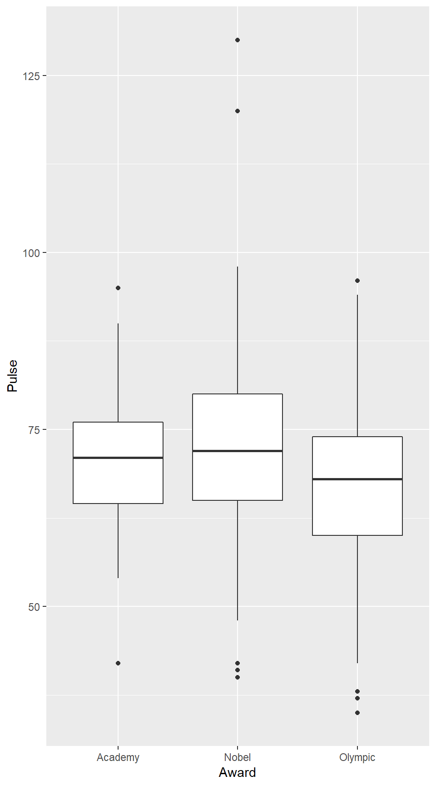
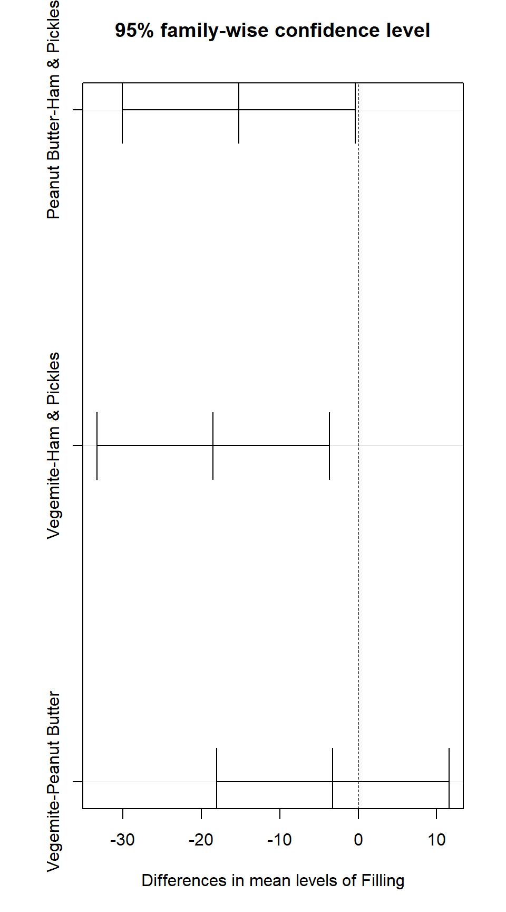

8 ANOVA to Compare Means
8.1 Analysis of Variance
Two variables: categorical explanatory and quantitative response
- Can be used in either experimental or observational designs.
Main Question: Does the population mean response depend on the (treatment) group?
- \(H_0\): the population group means are all the equal (\(\mu_1 = \mu_2 = \cdots \mu_k\))
- \(H_a\): the population group means are not all equal
If categorical variable has only 2 values, we already have a method: 2-sample \(t\)-test
- ANOVA allows for 3 or more groups (sub-populations)
\(F\) statistic compares within group variation (how different are individuals in the same group?) to between group variation (how different are the different group means?)
ANOVA assumes that each group is normally distributed with the same (population) standard deviation.
- Check normality with normal quantile plots (of residuals)
- Check equal standard deviation using 2:1 ratio rule (largest standard deviation at most twice the smallest standard deviation).
Null and Alternative Hypotheses
Example 8.1
favstats( Ants ~ Filling, data = SandwichAnts )## Filling min Q1 median Q3 max mean sd n missing
## 1 Ham & Pickles 34 42.00 51.0 55.25 65 49.25 10.793517 8 0
## 2 Peanut Butter 19 21.75 30.5 44.00 59 34.00 14.628739 8 0
## 3 Vegemite 18 24.00 30.0 39.00 42 30.75 9.254343 8 0gf_point( Ants ~ Filling, data = SandwichAnts) %>%
gf_line(Ants ~ Filling, group = 1, stat = "summary")## No summary function supplied, defaulting to `mean_se()gf_boxplot( Ants ~ Filling, data = SandwichAnts)Partitioning Variability
Example 8.3
Ants.Model <- lm (Ants ~ Filling, data = SandwichAnts)
anova(Ants.Model)## Analysis of Variance Table
##
## Response: Ants
## Df Sum Sq Mean Sq F value Pr(>F)
## Filling 2 1561 780.50 5.6267 0.01105 *
## Residuals 21 2913 138.71
## ---
## Signif. codes: 0 '***' 0.001 '**' 0.01 '*' 0.05 '.' 0.1 ' ' 1The p-value listed in this output is the p-value for our null hypothesis that the mean population response is the same in each treatment group. In this case we would reject the null hypothesis at the \(\alpha = 0.05\) level.
In the next section we’ll look at this test in more detail, but notice that if you know the assumptions of a test, the null hypothesis being tested, and the p-value, you can generally interpret the results even if you don’t know all the details of how the test statistic is computed.
The F-Statistic
The ANOVA test statistic (called \(F\)) is based on three ingredients:
#. how different the group means are (between group differences)
#. the amount of variability within each group (within group differences)
#. sample sizeEach of these will be involved in the calculation of \(F\).
Figure 8.3
Rand.Ants <- do(1000) * anova(lm(Ants ~ shuffle(Filling), data = SandwichAnts))
tally( ~ (F >= 5.63), data = Rand.Ants)## (F >= 5.63)
## TRUE FALSE <NA>
## 18 982 1000prop( ~ (F >= 5.63), data = Rand.Ants)## prop_TRUE
## 0.018gf_dotplot( ~ F, binwidth = 0.20, dotsize = .2, colour = ~(F <= 5.63), data = Rand.Ants)The F-distribution
Under certain conditions, the \(F\) statistic has a known distribution (called the \(F\) distribution). Those conditions are
- The null hypothesis is true (i.e., each group has the same mean) #. Each group is sampled from a normal population #. Each population group has the same standard deviation
When these conditions are met, we can use the \(F\)-distribution to compute the p-value without generating the randomization distribution.
#. $F$ distributions have two parameters -- the degrees of freedomfor the numerator and for the denominator.
In our example, this is \(2\) for the numerator and \(7\) for the denominator.
When \(H_0\) is true, the numerator and denominator both have a mean of 1, so \(F\) will tend to be close to 1.
When \(H_0\) is false, there is more difference between the groups, so the numerator tends to be larger.
This means we will reject the null hypothesis when \(F\) gets large enough.
- The p-value is computed using
pf().
- The p-value is computed using
Figure 8.4
gf_dhistogram( ~ F, binwidth = 4/7, center = .25, data = Rand.Ants) %>%
gf_dist('f', df1 = 2, df2 = 21)More Examples of ANOVA
Example 8.5
head(StudentSurvey, 3)## Year Gender Smoke Award HigherSAT Exercise TV Height Weight
## 1 Senior M No Olympic Math 10 1 71 180
## 2 Sophomore F Yes Academy Math 4 7 66 120
## 3 FirstYear M No Nobel Math 14 5 72 208
## Siblings BirthOrder VerbalSAT MathSAT SAT GPA Pulse Piercings Sex
## 1 4 4 540 670 1210 3.13 54 0 Male
## 2 2 2 520 630 1150 2.50 66 3 Female
## 3 2 1 550 560 1110 2.55 130 0 Malefavstats( ~ Pulse, data = StudentSurvey)## min Q1 median Q3 max mean sd n missing
## 35 62 70 77.75 130 69.57459 12.20514 362 0favstats(Pulse ~ Award, data = StudentSurvey)## Award min Q1 median Q3 max mean sd n missing
## 1 Academy 42 64.5 71 76 95 70.51613 12.35818 31 0
## 2 Nobel 40 65.0 72 80 130 72.21477 13.09093 149 0
## 3 Olympic 35 60.0 68 74 96 67.25275 10.97067 182 0anova(lm(Pulse ~ Award, StudentSurvey))## Analysis of Variance Table
##
## Response: Pulse
## Df Sum Sq Mean Sq F value Pr(>F)
## Award 2 2047 1023.62 7.1039 0.0009425 ***
## Residuals 359 51729 144.09
## ---
## Signif. codes: 0 '***' 0.001 '**' 0.01 '*' 0.05 '.' 0.1 ' ' 1Figure 8.5
gf_boxplot(Pulse ~ Award, data = StudentSurvey)
ANOVA Calculations
Between group variability:
span style=“color:green”> \(G = `groupMean` - `grandMean`\) This measures how different a group is from the overall average.
Within group variability:
span style=“color:red”> \(E = `response` - `groupMean`\) This measures how different and individual is from its group average. \(E\) stands for “error”, but just as in “standard error” it is not a ``mistake". It is simply measure how different an individual response is from the model prediction (in this case, the group mean).
The individual values of span style=“color:red”> \(E\) are called residuals.
Example 8.6
Let’s first compute the grand mean and group means.
SandwichAnts## Butter Filling Bread Ants Order
## 1 no Vegemite Rye 18 10
## 2 no Peanut Butter Rye 43 26
## 3 no Ham & Pickles Rye 44 39
## 4 no Vegemite Wholemeal 29 25
## 5 no Peanut Butter Wholemeal 59 35
## 6 no Ham & Pickles Wholemeal 34 1
## 7 no Vegemite Multigrain 42 44
## 8 no Peanut Butter Multigrain 22 36
## 9 no Ham & Pickles Multigrain 36 32
## 10 no Vegemite White 42 33
## 11 no Peanut Butter White 25 34
## 12 no Ham & Pickles White 49 13
## 13 no Vegemite Rye 31 14
## 14 no Peanut Butter Rye 36 31
## 15 no Ham & Pickles Rye 54 20
## 16 no Vegemite Wholemeal 21 19
## 17 no Peanut Butter Wholemeal 47 38
## 18 no Ham & Pickles Wholemeal 65 5
## 19 no Vegemite Multigrain 38 21
## 20 no Peanut Butter Multigrain 19 22
## 21 no Ham & Pickles Multigrain 59 8
## 22 no Vegemite White 25 41
## 23 no Peanut Butter White 21 16
## 24 no Ham & Pickles White 53 23mean(~ Ants, data = SandwichAnts) # grand mean## [1] 38mean(Ants ~ Filling, data = SandwichAnts) # group means## Ham & Pickles Peanut Butter Vegemite
## 49.25 34.00 30.75And add those to our data frame
SA <- transform(SandwichAnts, groupMean = c(30.75, 34.00, 49.25, 30.75, 34.00, 49.25, 30.75, 34.00, 49.25, 30.75, 34.00, 49.25, 30.75, 34.00, 49.25, 30.75, 34.00, 49.25, 30.75, 34.00, 49.25, 30.75, 34.00, 49.25) )
SA <- transform(SA, grandMean = rep( 38, 24 ) )
SA## Butter Filling Bread Ants Order groupMean grandMean
## 1 no Vegemite Rye 18 10 30.75 38
## 2 no Peanut Butter Rye 43 26 34.00 38
## 3 no Ham & Pickles Rye 44 39 49.25 38
## 4 no Vegemite Wholemeal 29 25 30.75 38
## 5 no Peanut Butter Wholemeal 59 35 34.00 38
## 6 no Ham & Pickles Wholemeal 34 1 49.25 38
## 7 no Vegemite Multigrain 42 44 30.75 38
## 8 no Peanut Butter Multigrain 22 36 34.00 38
## 9 no Ham & Pickles Multigrain 36 32 49.25 38
## 10 no Vegemite White 42 33 30.75 38
## 11 no Peanut Butter White 25 34 34.00 38
## 12 no Ham & Pickles White 49 13 49.25 38
## 13 no Vegemite Rye 31 14 30.75 38
## 14 no Peanut Butter Rye 36 31 34.00 38
## 15 no Ham & Pickles Rye 54 20 49.25 38
## 16 no Vegemite Wholemeal 21 19 30.75 38
## 17 no Peanut Butter Wholemeal 47 38 34.00 38
## 18 no Ham & Pickles Wholemeal 65 5 49.25 38
## 19 no Vegemite Multigrain 38 21 30.75 38
## 20 no Peanut Butter Multigrain 19 22 34.00 38
## 21 no Ham & Pickles Multigrain 59 8 49.25 38
## 22 no Vegemite White 25 41 30.75 38
## 23 no Peanut Butter White 21 16 34.00 38
## 24 no Ham & Pickles White 53 23 49.25 38SA <- transform(SA, M = groupMean - grandMean)
SA <- transform(SA, E = Ants - groupMean)
SA## Butter Filling Bread Ants Order groupMean grandMean M
## 1 no Vegemite Rye 18 10 30.75 38 -7.25
## 2 no Peanut Butter Rye 43 26 34.00 38 -4.00
## 3 no Ham & Pickles Rye 44 39 49.25 38 11.25
## 4 no Vegemite Wholemeal 29 25 30.75 38 -7.25
## 5 no Peanut Butter Wholemeal 59 35 34.00 38 -4.00
## 6 no Ham & Pickles Wholemeal 34 1 49.25 38 11.25
## 7 no Vegemite Multigrain 42 44 30.75 38 -7.25
## 8 no Peanut Butter Multigrain 22 36 34.00 38 -4.00
## 9 no Ham & Pickles Multigrain 36 32 49.25 38 11.25
## 10 no Vegemite White 42 33 30.75 38 -7.25
## 11 no Peanut Butter White 25 34 34.00 38 -4.00
## 12 no Ham & Pickles White 49 13 49.25 38 11.25
## 13 no Vegemite Rye 31 14 30.75 38 -7.25
## 14 no Peanut Butter Rye 36 31 34.00 38 -4.00
## 15 no Ham & Pickles Rye 54 20 49.25 38 11.25
## 16 no Vegemite Wholemeal 21 19 30.75 38 -7.25
## 17 no Peanut Butter Wholemeal 47 38 34.00 38 -4.00
## 18 no Ham & Pickles Wholemeal 65 5 49.25 38 11.25
## 19 no Vegemite Multigrain 38 21 30.75 38 -7.25
## 20 no Peanut Butter Multigrain 19 22 34.00 38 -4.00
## 21 no Ham & Pickles Multigrain 59 8 49.25 38 11.25
## 22 no Vegemite White 25 41 30.75 38 -7.25
## 23 no Peanut Butter White 21 16 34.00 38 -4.00
## 24 no Ham & Pickles White 53 23 49.25 38 11.25
## E
## 1 -12.75
## 2 9.00
## 3 -5.25
## 4 -1.75
## 5 25.00
## 6 -15.25
## 7 11.25
## 8 -12.00
## 9 -13.25
## 10 11.25
## 11 -9.00
## 12 -0.25
## 13 0.25
## 14 2.00
## 15 4.75
## 16 -9.75
## 17 13.00
## 18 15.75
## 19 7.25
## 20 -15.00
## 21 9.75
## 22 -5.75
## 23 -13.00
## 24 3.75As we did with variance, we will square these differences:
SA <- transform(SA, M2 = (groupMean - grandMean)^2)
SA <- transform(SA, E2 = (Ants - groupMean)^2)
SA## Butter Filling Bread Ants Order groupMean grandMean M
## 1 no Vegemite Rye 18 10 30.75 38 -7.25
## 2 no Peanut Butter Rye 43 26 34.00 38 -4.00
## 3 no Ham & Pickles Rye 44 39 49.25 38 11.25
## 4 no Vegemite Wholemeal 29 25 30.75 38 -7.25
## 5 no Peanut Butter Wholemeal 59 35 34.00 38 -4.00
## 6 no Ham & Pickles Wholemeal 34 1 49.25 38 11.25
## 7 no Vegemite Multigrain 42 44 30.75 38 -7.25
## 8 no Peanut Butter Multigrain 22 36 34.00 38 -4.00
## 9 no Ham & Pickles Multigrain 36 32 49.25 38 11.25
## 10 no Vegemite White 42 33 30.75 38 -7.25
## 11 no Peanut Butter White 25 34 34.00 38 -4.00
## 12 no Ham & Pickles White 49 13 49.25 38 11.25
## 13 no Vegemite Rye 31 14 30.75 38 -7.25
## 14 no Peanut Butter Rye 36 31 34.00 38 -4.00
## 15 no Ham & Pickles Rye 54 20 49.25 38 11.25
## 16 no Vegemite Wholemeal 21 19 30.75 38 -7.25
## 17 no Peanut Butter Wholemeal 47 38 34.00 38 -4.00
## 18 no Ham & Pickles Wholemeal 65 5 49.25 38 11.25
## 19 no Vegemite Multigrain 38 21 30.75 38 -7.25
## 20 no Peanut Butter Multigrain 19 22 34.00 38 -4.00
## 21 no Ham & Pickles Multigrain 59 8 49.25 38 11.25
## 22 no Vegemite White 25 41 30.75 38 -7.25
## 23 no Peanut Butter White 21 16 34.00 38 -4.00
## 24 no Ham & Pickles White 53 23 49.25 38 11.25
## E M2 E2
## 1 -12.75 52.5625 162.5625
## 2 9.00 16.0000 81.0000
## 3 -5.25 126.5625 27.5625
## 4 -1.75 52.5625 3.0625
## 5 25.00 16.0000 625.0000
## 6 -15.25 126.5625 232.5625
## 7 11.25 52.5625 126.5625
## 8 -12.00 16.0000 144.0000
## 9 -13.25 126.5625 175.5625
## 10 11.25 52.5625 126.5625
## 11 -9.00 16.0000 81.0000
## 12 -0.25 126.5625 0.0625
## 13 0.25 52.5625 0.0625
## 14 2.00 16.0000 4.0000
## 15 4.75 126.5625 22.5625
## 16 -9.75 52.5625 95.0625
## 17 13.00 16.0000 169.0000
## 18 15.75 126.5625 248.0625
## 19 7.25 52.5625 52.5625
## 20 -15.00 16.0000 225.0000
## 21 9.75 126.5625 95.0625
## 22 -5.75 52.5625 33.0625
## 23 -13.00 16.0000 169.0000
## 24 3.75 126.5625 14.0625And then add them up (SS stands for “sum of squares”)
SST <- sum( ~((Ants - grandMean)^2), data = SA); SST## [1] 4474SSM <- sum( ~M2, data = SA ); SSM # also called SSG## [1] 1561SSE <- sum( ~E2, data = SA ); SSE## [1] 29138.2 Pairwise Comparisons and Inference After ANOVA
Using ANOVA for Inferences about Group Means
We can construct a confidence interval for any of the means by just
taking a subset of the data and using t.test(), but there
are some problems with this approach. Most importantly,
We were primarily interested in comparing the means across the groups. Often people will display confidence intervals for each group and look for “overlapping” intervals. But this is not the best way to look for differences.
Nevertheless, you will sometimes see graphs showing multiple confidence intervals and labeling them to indicate which means appear to be different from which. (See the solution to problem 15.3 for an example.)
Example 8.7
anova(Ants.Model)## Analysis of Variance Table
##
## Response: Ants
## Df Sum Sq Mean Sq F value Pr(>F)
## Filling 2 1561 780.50 5.6267 0.01105 *
## Residuals 21 2913 138.71
## ---
## Signif. codes: 0 '***' 0.001 '**' 0.01 '*' 0.05 '.' 0.1 ' ' 1MSE<- 138.7
mean(Ants ~ Filling, data = SandwichAnts)## Ham & Pickles Peanut Butter Vegemite
## 49.25 34.00 30.75mean <- 34.0
t.star <- qt(.975, df = 21); t.star## [1] 2.079614mean - t.star * (sqrt(MSE) / sqrt(8))## [1] 25.34084mean + t.star * (sqrt(MSE) / sqrt(8))## [1] 42.65916TukeyHSD(Ants.Model)## Tukey multiple comparisons of means
## 95% family-wise confidence level
##
## Fit: aov(formula = x)
##
## $Filling
## diff lwr upr p adj
## Peanut Butter-Ham & Pickles -15.25 -30.09326 -0.4067363 0.0433492
## Vegemite-Ham & Pickles -18.50 -33.34326 -3.6567363 0.0131006
## Vegemite-Peanut Butter -3.25 -18.09326 11.5932637 0.8466376plot(TukeyHSD(Ants.Model))
Example 8.8
MSE<- 138.7
mean(Ants ~ Filling, data = SandwichAnts)## Ham & Pickles Peanut Butter Vegemite
## 49.25 34.00 30.75diff.mean <- (30.75 - 49.25)
t.star <- qt(.975, df = 21); t.star## [1] 2.079614diff.mean - t.star * (sqrt(MSE * (1/8 + 1/8)))## [1] -30.74591diff.mean + t.star * (sqrt(MSE * (1/8 + 1/8)))## [1] -6.254094Example 8.9
MSE<- 138.7
mean(Ants ~ Filling, data = SandwichAnts)## Ham & Pickles Peanut Butter Vegemite
## 49.25 34.00 30.75diff.mean <- (30.75 - 34.0)t <- diff.mean / sqrt(MSE * (1/8 + 1/8)); t## [1] -0.5519187pt(t, df = 21) * 2## [1] 0.5868302Lots of Pairwise Comparisons
Example 8.10
head(TextbookCosts)## Field Books Cost
## 1 SocialScience 3 77
## 2 NaturalScience 2 231
## 3 NaturalScience 1 189
## 4 SocialScience 6 85
## 5 NaturalScience 1 113
## 6 Humanities 9 132Books.Model <- lm(Cost ~ Field, data = TextbookCosts)
anova(Books.Model)## Analysis of Variance Table
##
## Response: Cost
## Df Sum Sq Mean Sq F value Pr(>F)
## Field 3 30848 10283 4.0547 0.01397 *
## Residuals 36 91294 2536
## ---
## Signif. codes: 0 '***' 0.001 '**' 0.01 '*' 0.05 '.' 0.1 ' ' 1summary(Books.Model)##
## Call:
## lm(formula = Cost ~ Field, data = TextbookCosts)
##
## Residuals:
## Min 1Q Median 3Q Max
## -77.60 -35.30 -4.95 36.90 102.70
##
## Coefficients:
## Estimate Std. Error t value Pr(>|t|)
## (Intercept) 94.60 15.92 5.940 8.35e-07 ***
## FieldHumanities 25.70 22.52 1.141 0.26134
## FieldNaturalScience 76.20 22.52 3.384 0.00174 **
## FieldSocialScience 23.70 22.52 1.052 0.29965
## ---
## Signif. codes: 0 '***' 0.001 '**' 0.01 '*' 0.05 '.' 0.1 ' ' 1
##
## Residual standard error: 50.36 on 36 degrees of freedom
## Multiple R-squared: 0.2526, Adjusted R-squared: 0.1903
## F-statistic: 4.055 on 3 and 36 DF, p-value: 0.01397TukeyHSD(Books.Model)## Tukey multiple comparisons of means
## 95% family-wise confidence level
##
## Fit: aov(formula = x)
##
## $Field
## diff lwr upr p adj
## Humanities-Arts 25.7 -34.95384 86.353844 0.6669143
## NaturalScience-Arts 76.2 15.54616 136.853844 0.0090147
## SocialScience-Arts 23.7 -36.95384 84.353844 0.7201024
## NaturalScience-Humanities 50.5 -10.15384 111.153844 0.1312366
## SocialScience-Humanities -2.0 -62.65384 58.653844 0.9997441
## SocialScience-NaturalScience -52.5 -113.15384 8.153844 0.1097759Figure 8.8
gf_boxplot(Cost ~ Field, data = TextbookCosts) %>%
gf_refine(coord_flip())